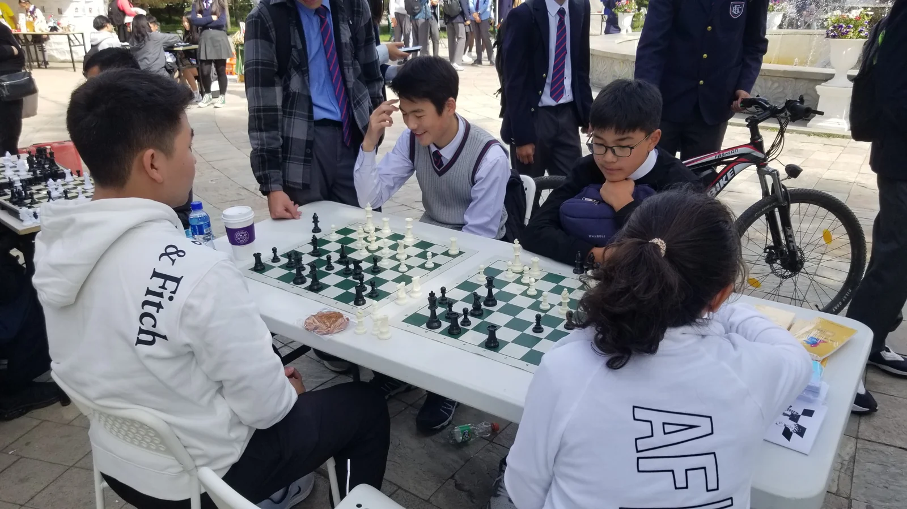

Von Neumann & Morgenstern
Published Theory of Games and Economic Behavior, formalizing utility and zero-sum minimax play.
Human systems · Grades 7–12 · 60 minutes + second session
Your best move depends on someone else’s next move.
Why do teammates sometimes leave shared work to others? Why do drivers agree on one side of the road? How do auction rules, school lotteries, and classroom scoreboards quietly steer human choices? Game theory studies strategic interdependence—situations where no player controls the outcome alone.
2×2 Matrix Lab ↓ · Repeated Dilemma & Tournament · Game Trees · Real Applications · Whose Scoreboard?
How can we redesign incentives and institutions so that doing well individually also supports the group—without letting narrow metrics replace what matters?
Before you begin: You only need to compare numbers and test scenarios. Work alone or with a partner; no account or outside materials are required.
Two students share responsibility for tidying a makerspace at the end of a class period. Each can Help or Hold back and leave the work to the other. Helping costs time and effort; a clean, ready-to-use workspace benefits both. Privately choose your move before discussing it.
Now ask what changes your choice: Would your answer shift if you shared the makerspace every week for a semester? If everyone could see your cleanup log? If you had split the tools into two clear zones beforehand? Each of those changes alters the game—even when the people stay the same.
Think, pair, share: Describe a decision in school, sports, traffic, or online life where another person’s choice changed what you wanted to do. Avoid identifying classmates.
Published Theory of Games and Economic Behavior, formalizing utility and zero-sum minimax play.
Proved every finite game has an equilibrium in mixed or pure strategies where no player gains by deviating alone.
Showed how focal points, credible commitments, and brinkmanship govern bargaining beyond pure numbers.
Ran computer tournaments proving simple reciprocal strategies like Tit for Tat can thrive in repeated dilemmas.
Turned game theory into institutional engineering: self-governed commons, school matching, kidney chains, and spectrum auctions.
Warned that external scoreboards can trigger value capture, making us mistake points for our real purposes.
Look closely · Information and timing shape strategy

Players are the decision makers. An action is a single move; a strategy is a complete contingent plan specifying what you will do in every possible situation, including later rounds.
A payoff summarizes how much a player values an outcome—whether measured in points, time saved, money, reputation, or fairness. Changing what players care about changes the payoff table.
Do players act simultaneously or sequentially? Do they know each other’s payoffs (complete information) or guess private values (asymmetric information)?
A best response maximizes your payoff given what the other player chooses. If one move beats all alternatives regardless of what your partner does, it is strictly dominant.
A strategy profile where every player is playing a best response to everyone else. Nobody can improve their score by changing their own move alone—even if the outcome feels miserable.
An outcome is Pareto efficient if no one can be made better off without making someone else worse off. A Nash equilibrium can be Pareto inefficient—the signature tragedy of social dilemmas.
In competitive conflict (like soccer penalty kicks), predictability is fatal. A mixed strategy randomizes moves with deliberate probabilities so opponents cannot exploit a pattern.
A threat only changes behavior if it is credible when the moment arrives. When multiple equilibria exist, shared culture creates a focal point people converge on without talking.
Everyday speech treats “game” as a battle with one winner and one loser. Formal game theory separates three payoff structures:
| Game structure | Payoff relationship | Strategic implication | Classic example |
|---|---|---|---|
| Zero-sum / Constant-sum | Your gain equals the other player’s loss (u₁ + u₂ = c). |
Pure competition; mixed strategies keep rivals guessing. | Penalty kicks, chess, rock-paper-scissors |
| Pure coordination | Interests align (u₁ = u₂ on matched choices). |
Communication or shared conventions solve the problem. | Driving side, file formats, meeting spots |
| Mixed-motive (Social dilemma) | Mutual gains exist, but individual temptation pulls away. | Requires repetition, trust, or institutional rules to stabilize cooperation. | Prisoner’s Dilemma, group projects, fisheries |
A single change in payoffs transforms the social problem you are facing. Choose one of the five classic 2×2 models below, inspect each player’s best responses, and watch how dominant strategies, pure Nash equilibria, mixed equilibria, and Pareto efficiency shift.
Step 1 · Select a game archetype
| You ↓ / Partner → | Help | Hold back |
|---|---|---|
| Help | 3, 3 | 0, 5 |
| Hold back | 5, 0 | 1, 1 |
Step 2 · Test best responses (hold one player fixed)
Compare your points: Help earns 3; Hold back earns 5. Your best response is Hold back.
Switch between the two fixed choices. If your best response stays the same either way, you have a strictly dominant action.
Try changing the Prisoner’s Dilemma into a Stag Hunt by raising mutual Help from 3, 3 to 6, 6 (or adding a social-trust bonus). Then click Apply custom payoffs to recompute all equilibria live.
Notice the difference: In the Prisoner’s Dilemma, individual temptation pulls both players into (1, 1) even though (3, 3) beats it for everyone. In the Stag Hunt, (4, 4) is already a Nash equilibrium—no one wants to betray a partner who is guaranteed to cooperate—yet fear of an uncooperative partner can trap both in safe, low-reward (2, 2). Solving a Prisoner’s Dilemma requires changing payoffs or repeating the game; solving a Stag Hunt requires building mutual assurance.
A one-round Prisoner’s Dilemma is bleak. What happens when players meet again? Political scientist Robert Axelrod called the chance of future interaction the shadow of the future. Experiment first as a player, then run a full multi-strategy tournament.
Experiment 01 · Play against classic repeated-game strategies
Changing any setting starts a fresh experiment. Strategies are public so you can reason about how today’s choice echoes tomorrow.
Make your first move. Watch how today’s choice changes your partner’s next response.
Round 0 of 8. Your score: 0. Partner’s score: 0.
| Round | You | Partner | Points (you, partner) | Note |
|---|
Investigate: (1) Help Tit for Tat for 7 rounds, then hold back on round 8—why does a known final round tempt backward induction? (2) Turn on 10% noise and compare Tit for Tat against Tit for Two Tats or Grim Trigger. One slip against Grim Trigger ruins every remaining round; Tit for Tat can get stuck alternating (5, 0) and (0, 5) unless one side forgives.
Helping all 8 rounds against Tit for Tat gives 24 points each (48 shared). Holding back every round gives you 12 and the partner 7: (5, 0) in round 1, then seven rounds of (1, 1). Holding back once on round 8 against a fixed reciprocator yields 26 for you and 21 for the partner—illustrating why finite horizons unravel when every player reasons backward from the last round. Under indefinite horizons (75% continuation), the expected future gain from keeping cooperation alive outweighs the one-shot +2 temptation (5 − 3 = 2).
Experiment 02 · Axelrod Round-Robin & Evolutionary Tournament
In 1980, political scientist Robert Axelrod invited game theorists to submit computer programs for an iterated Prisoner’s Dilemma tournament. Every strategy played every other strategy—and a copy of itself. Test which ecosystems support cooperation below.
| Rank | Strategy | Avg pts / round | Style |
|---|
What Axelrod found (and what he cautioned): Across diverse environments, successful strategies shared four traits: they were nice (never the first to defect), provocable (punishing betrayal instead of enabling exploitation), forgiving (returning to cooperation once the partner does), and clear (easy for others to read). Crucially, context still rules: uncheck all nice strategies except one against Always Hold Back, and even Tit for Tat loses—cooperation needs at least a small cluster of reciprocators to survive.
Not all decisions happen simultaneously in the dark. When players move in sequence, a game is drawn as a game tree (extensive form). To predict rational play, start at the end of the tree and work backward—a method called backward induction.
Interactive game tree · Backward induction & credible threats
Now compare sequential threats with pure coordination. Imagine two teammates choosing a file format. If both choose A, each earns 2; if both choose B, each earns 2; if they choose different formats, each earns 0. Both (A, A) and (B, B) are Nash equilibria. Neither action is dominant on its own.
Schelling focal points: Economist Thomas Schelling asked strangers how they would meet in New York City on a given day if neither had a phone. Without communicating, a huge majority picked noon at Grand Central Terminal. Shared culture and landmarks act as focal points that coordinate expectations across multiple equilibria.
Compare: Why does a handshake agreement (“let’s both use format A”) solve a coordination game easily, whereas “let’s both help” often breaks down in a one-round Prisoner’s Dilemma? Check whether either player benefits from breaking the agreement unilaterally.
Behind each real-world system lies a specific mechanism that reshapes payoffs, information, or matching rules—along with clear limits to what the model captures.
Players: teammates. Choices: contribute or free-ride. Incentive: enjoy a shared grade while saving effort.
Model limit: A payoff matrix ignores unequal background skills, illness, and friendship.
Players: irrigators, fishers, or shared-lab users. Choices: extract more today or follow sustainable limits.
Continue with Tragedy of the Commons.
Players: bidders competing for spectrum licenses or public contracts. Payoff: item value minus price paid.
Milgrom & Wilson (2020 Nobel) expanded this into multi-round spectrum auctions that reduce the winner’s curse. Source: Nobel Prize, 2020
Players: students & schools, or incompatible patient–donor pairs seeking swaps without money.
“Stable” is a mathematical property; it does not by itself guarantee fair school funding or equal access. Source: Nobel Prize, 2012
Players: organisms competing for territory or food—without conscious math. Strategy: inherited behavior.
Vampire bats also maintain reciprocal blood-sharing networks using recognition and repeated roosting.
Players: firms, unions, or nations choosing whether to escalate, share standards, or bind themselves.
Model limit: Escalation models can underestimate misreading, domestic politics, and emotional pride. Source: Nobel Prize, 2005
Look for the resource, the players, and the rules. Click either photograph to enlarge it for discussion.

Before writing your own proposal, test how institutional levers reshape everyday dilemmas—and watch closely for unintended side effects.
Interactive institutional lever tester
Strategic shift:
Why incentives move:
Watch out for:
Remember: A payoff table is a model, not a mind reader. Higher total points do not automatically mean a fair outcome. And notice the trap we just uncovered: when a visibility log or point bonus becomes the new obsession, the rule itself can distort what players value—which brings us to Session 2.
Our first game treated points as the players’ goals. Now question that assumption: who decided what deserves points? Philosopher C. Thi Nguyen’s The Score: How to Stop Playing Somebody Else’s Game asks how external scoring systems quietly reshape our purposes. Predicting a best response does not settle whether its goal is worth pursuing.
Likes, school rankings, workplace key performance indicators (KPIs), and fitness streaks compress messy human activities onto one clean scale. Numbers help us notice patterns and coordinate action—a benefit Nguyen calls clarity. Yet that very clarity acts like a spotlight: everything outside the number fades into shadow. A count of finished assignments cannot, by itself, tell us whether someone genuinely understands an idea.
| Setting / metric | What it can help track | What it can miss | Possible response to incentives |
|---|---|---|---|
| Social media / likes | Visible audience reactions | Accuracy, care, quiet conversations | Post what provokes reactions rather than what helps someone understand. |
| School rankings / test averages | Performance on particular assessments | Student growth, belonging, different starting conditions | Concentrate on tested material at the expense of curiosity or collaboration. |
| Workplace KPI / tickets closed | Recorded throughput | Problem difficulty, lasting fixes, mentoring | Pick easy tickets or close a problem before the root cause is solved. |
| Fitness tracker / step streak | Recorded steps and consistency | Rest, injury recovery, joy, other movement | Protect a streak even when resting would serve health better. |
These are mechanisms to investigate, not claims that every person or institution acts this way. Ask who chose each metric, who profits from it, and who holds the power to revise it.
Economist Charles Goodhart observed: “When a measure becomes a target, it ceases to be a good measure.” Educational researcher Donald Campbell added that the more any quantitative indicator is used for high-stakes decisions, the more pressure it creates to distort the underlying process.
Nguyen goes one step further: value capture happens not just when institutions game a metric, but when an externally supplied, simplified number replaces our own richer personal values. We start wanting to learn a language, and end up caring mainly about protecting an app streak.
Three distinct attitudes toward a score: (1) “The score is helpful feedback.” (2) “I optimize the score because my funding or job depends on it, even though it misses real quality.” (3) “I now believe good work simply is a high score.” Only the third reflects internalized value capture. Strategic compliance and value capture interact, yet they are not the same thing. Read Nguyen, Magnani, and Kennedy’s classroom case on gamified communication.
You run a fictional after-school learning club. Its sponsor rewards completed activity cards. Choose an approach before revealing the sponsor’s points. Then choose again after the reveal and test how different institutional responses hold up.
Choose an approach, then reveal the points.
Sponsor’s rule: 10 points per completed card. In this invented meeting, repeating quick cards completes 12 (120 points), the difficult project completes 3 (30 points), and mentoring completes 1 (10 points). These numbers do not measure curiosity, care, or durable understanding.
Test an institutional response to the sponsor
Your notes stay in this browser tab and are not saved after reloading.
Debrief: Changing your choice after seeing the sponsor’s points does not automatically mean value capture—it might be a calculated survival move under funding pressure. The deeper question is whether the scoreboard rewrote what you believe the club is for. Notice also why inventing a “care score” often backfires: turning kindness into points invites performative box-checking (Goodhart’s Law again). Sometimes qualitative conversation is a better safeguard than another metric.
Nguyen is not anti-game. In games we enter freely—chess, basketball, puzzle nights—we practice striving play: we temporarily adopt a disposable goal (“put the ball through the hoop”) for the joy of the struggle, and leave the score behind when the whistle blows. Real-world rankings operate under very different conditions:
Ask four questions about any scoreboard: (1) Can participants genuinely opt out? (2) Can they revise the rules? (3) Does losing threaten income, opportunity, or belonging? (4) Can they step outside the score when the activity ends? Voluntary games can become consuming, and real-world metrics can guide scarce resources—examine the conditions rather than praising every game or condemning every number.
A finished song, a clean circuit board, or a satisfying meal can be appreciated for what stands completed at the end.
Shaping a musical phrase, debugging with a friend, or adjusting spices by taste can be rewarding in the act of doing—even if nobody ever scores the result.
Neither kind of enjoyment replaces the other. A polished object can emerge from a miserable process, and an imperfect sketch can come from deeply absorbing work.
Two-minute experiment: Sketch a creature or tap a rhythm. First focus on producing something impressive for an imaginary judge. Repeat while noticing the feel of your movements and small discoveries along the way. Describe each experience without rating it. Did the activity feel different even if the finished product barely changed? Nguyen on process arts and appreciating our actions.
Interactive charter · Draft a personal or team scoreboard agreement
Return to our first game: What happens if “helping” earns fewer points on paper but protects a friendship or a joy in tinkering that you refuse to price? Better game-theoretic modeling acknowledges unmeasured human values without pretending every good thing has a neat numerical price.
Use fictional scenarios; students need not disclose grades, follower counts, bodies, or workplace experiences. The exercise has no winning choice and no class leaderboard. Invite disagreement: a student may reasonably enjoy a score or need to meet an imposed target. Assess the explanation of trade-offs, not whether the student rejects metrics.
Sources: University of Utah: overview of Nguyen’s argument; publisher’s book description. The club, sample metrics, and reflection activities are original classroom illustrations, not quotations or empirical findings from the book.
Explain a real decision using players, best response, and Nash equilibrium (or backward induction). Propose one rule change that improves collective outcomes and one limitation of your model. Then name one scoreboard metric in that setting, one human value it misses, and one safeguard that protects that value without inventing another ranking.
The payoff tables and classroom scenarios are teaching models created for this lesson. The external sources below document foundational research in equilibrium analysis, commons governance, market design, and the philosophy of games and metrics.
1994 Nobel: Equilibrium analysis (Nash, Harsanyi, Selten) · 2005 Nobel: Conflict & cooperation (Schelling, Aumann) · 2009 Nobel: Commons governance (Elinor Ostrom) · 2012 Nobel: Matching & market design (Roth, Shapley) · 2020 Nobel: Auction theory (Milgrom, Wilson)
Related lesson: Tragedy of the Commons · Related lesson: Stock Exchange · All lessons